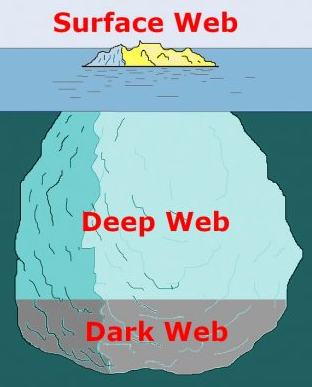
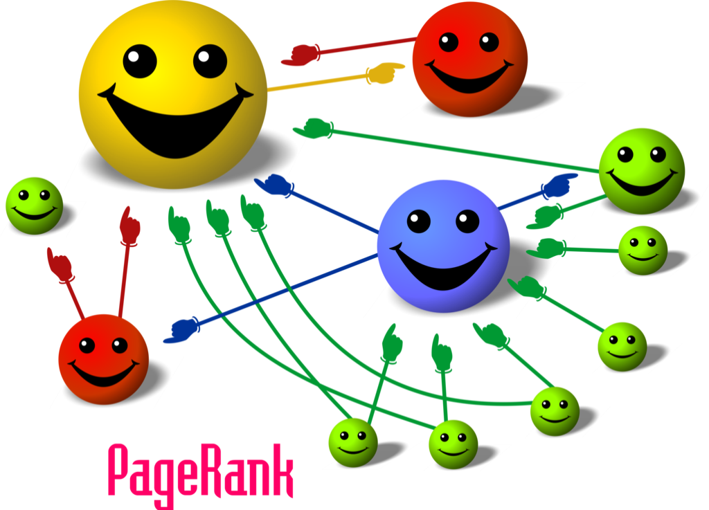
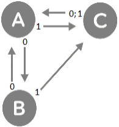
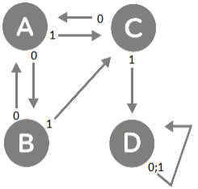
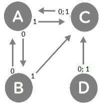

Navigateurs et moteurs de recheche
Il ne faut pas confondre les navigateurs Web qui sont des applications installés sur un ordinateur, une tablette ou un smartphone permettant de consulter le web avec les moteurs de recherche qui sont des applications web permettant de trouver des ressources (pages web, des articles de forums, des images, des vidéos, des fichiers, etc.).
Moteurs de recherche
Lorsqu'on fait une requête sur un moteur de recherche, celui-ci affiche une liste de pages correspondantes, en présentant les pages les plus populaires en premier. Mais il existe une énorme quantité d'informations sur Internet (plusieurs milliards de pages), et ces informations sont pour la plupart renouvelées quotidiennement. Alors comment fait ce moteur de recherche pour déterminer les pages les plus populaires ?
Un moteur de recherche utilise des robots d'indexation (en anglais web crawlers ou web spiders) qui explorent automatiquement le web pour collecter les ressources (pages web, images, vidéos, documents, etc.) afin de les indexer dans de gigantesques bases de données.
Le moteur de recherche consulte ensuite ses bases de données pour chacun des mots cherchés par ses utilisateurs et affiche les liens vers des pages classées dans un ordre de pertinence, selon ses propres critères, tels que le pourcentage de mots correspondant à la recherche, le nombre de pages pointant vers les pages, le nombre d'occurrences de chacun des mots clés dans la page, etc. Les résultats obtenus sont différents pour chaque moteur de recherche.
Web, Deep Web et Dark Web
Seulement moins de 5 % des pages web sont indexées par des moteurs de recherche. Le reste ne l'est pas, par exemple les données médicales, les comptes bancaires, les boites mail, les pages Netflix, etc., c'est le Deep Web. Une partie de ces pages du Deep Web n'est même pas accessible par un navigateur classique comme Chrome, Mozilla ou Edge, c'est le Dark Web, où l'on trouve beaucoup d'activités illégales comme des trafics d'armes ou de drogue, il est dangereux de s'y aventurer.
PageRank de Google
Dans cette activité, nous allons étudier une version simplifiée de l'algorithme PageRank, inventé par Sergey Brin et Larry Page, les fondateurs de Google.
PageRank n'est qu'un indicateur parmi d'autres dans l'algorithme qui permet à Google de classer les pages du web dans les résultats de recherche. Son principe général est simple : La plupart des pages web présentent des liens hypertextes vers d'autres pages : si une page est souvent référencée par d'autres pages, alors cette page est plus importante, et sera mieux classée. PageRank attribue à chaque page une valeur proportionnelle au nombre de fois qu'il passe sur cette page en parcourant le Web aléatoirement en suivant les liens de chaque page.
Simulation « à la main »
Le graphe ci-contre représente trois pages web A, B et C et les liens entre elles par des cercles et des flèches. Le but est de déterminer la fréquence de visite de chaque page en parcourant ce graphe de façon aléatoire.

from random import randint
alea = randint(0,1)
print(alea)
On part de la page A représentée sur le graphe, puis on se déplace de page en page sur le graphe en respectant les règles suivantes :
- On génère un nombre aléatoire 0 ou 1 avec le programme précédent.
- Selon le résultat obtenu on se rend sur la page suivante par le lien correspondant.
- On marque un trait dans la tableau ci-dessous correspondant à la nouvelle page visitée.
- On se déplace à nouveau.
A |
B |
C |
|
Visites (1 trait par visite) |
|||
Nombres de visites |
|||
Fréquences (nb visites/30) |
Simulation au départ d'une seule page
On va maintenant programmer cette première simulation en partant de A.
from random import randint
page = "A"
nA = 0
nB = 0
nC = 0
alea = randint(0, 1)
if alea == 0:
page_suivante = "B"
nB = nB +1
else:
# compléter la suite du programme ci-dessous quand alea est égal à 1
print("A: ", nA)
print("B: ", nB)
print("C: ", nC)
Simulation au départ de plusieurs pages
Noter les lignes commençants par le signe # pour signifier un commentaire ignoré par Python.

from random import randint
page = input("Entrer la page de départ (A/B/C)")
nA = 0
nB = 0
nC = 0
alea = randint(0, 1)
if page == "A":
if alea == 0:
page_suivante = "B"
nB = nB +1
else:
page_suivante = "C"
nC = nC + 1
if page == "B":
# completer ci dessous quand la page est "B"
if page == "C":
# completer ci dessous quand la page est "C"
print("A: ", nA)
print("B: ", nB)
print("C: ", nC)
pagerank.pySimulation un grand nombre de fois
Modifier votre programme précédent de la façon suivante (en prenant soin à l'indentation) :
from random import randint
page = input("Entrer la page de départ (A/B/C)")
nA = 0
nB = 0
nC = 0
Attention à l'indentation ! Il faut garder le code du programme précédent en indentant vers la droite la partie qui doit être répétée dans la boucle for i in range(10 000)
# répéter 10 000 fois
for i in range(10000):
alea = randint(0, 1)
if page == "A":
if alea == 0:
page_suivante = "B"
# continuer avec le code du programme précédent
if page == "B":
# programme précédent
if page == "C":
# programme précédent
<---------- Penser à remplacer la valeur de page par celle de page_suivante à l'intérieur de la boucle
page = page_suivante
print("A: ", nA)
print("B: ", nB)
print("C: ", nC)
Compléter les résultats obtenus :
A |
B |
C |
|
Visites |
|||
Nombres de visites |
|||
Fréquences (nb visites/30) |
Un premier cas particulier
Voici un nouveau graphe qui contient cette fois quatre pages : A, B, C et D.
Pour pallier à ce problème, on décide que si la page visitée ne redirige pas vers une autre page, alors on choisit au hasard la page suivante parmi les autres.
A |
B |
C |
D |
|
Fréquence |
pagerank1.pyUn deuxième cas particulier
Voici un nouveau graphe.
Pour pallier à ce problème on décide que, à chaque page visitée quelle qu'elle soit, on choisit une fois sur vingt la page suivante au hasard parmi toutes les pages.
A |
B |
C |
D |
|
Fréquence |